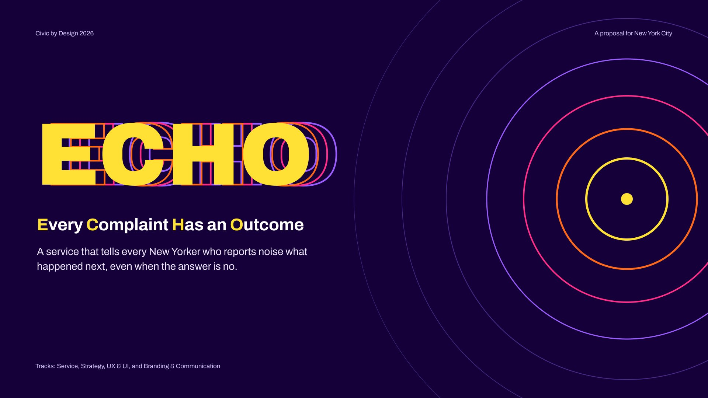
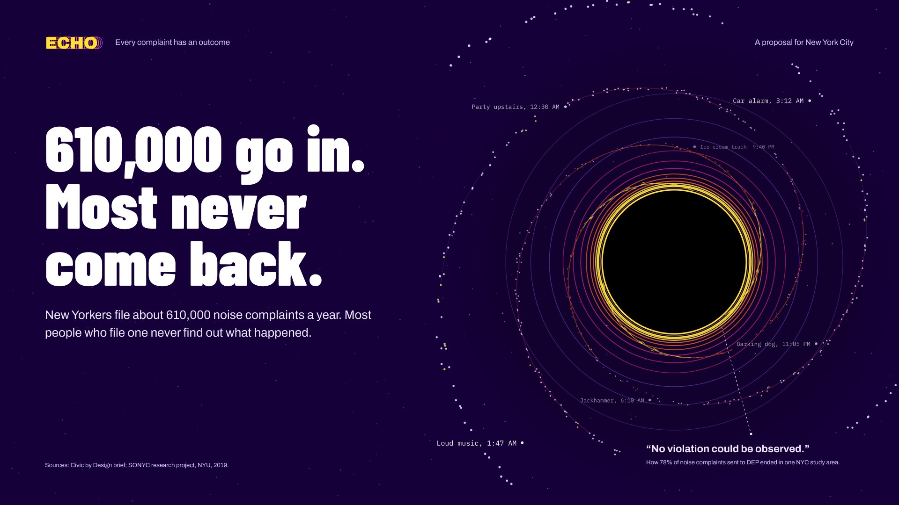
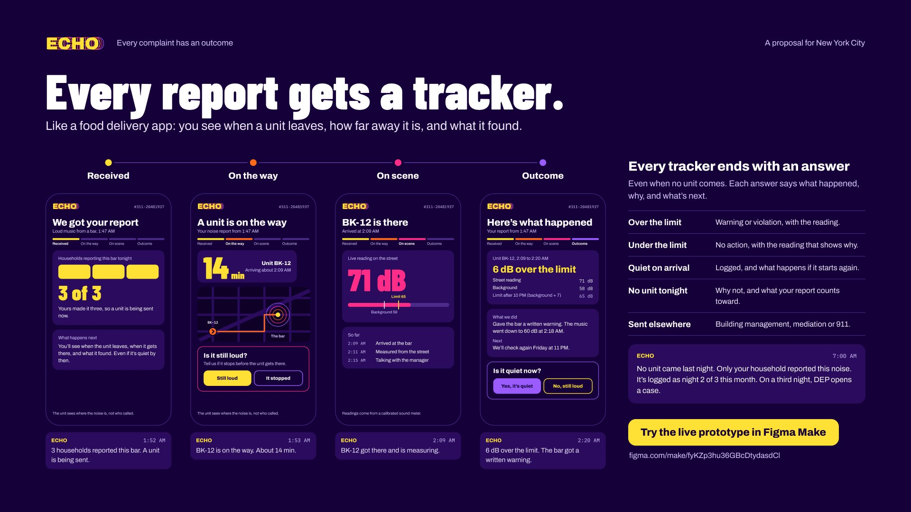
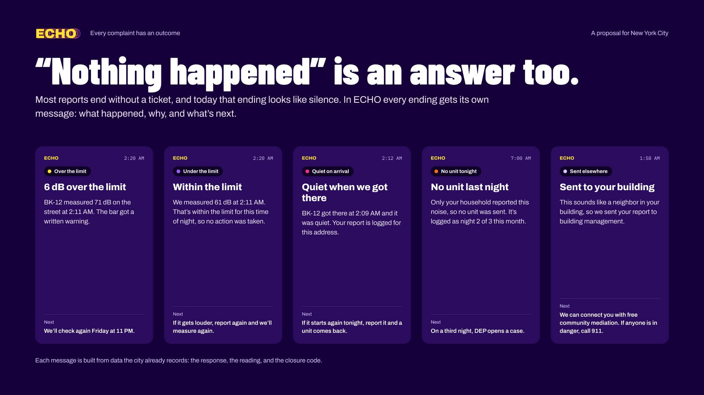
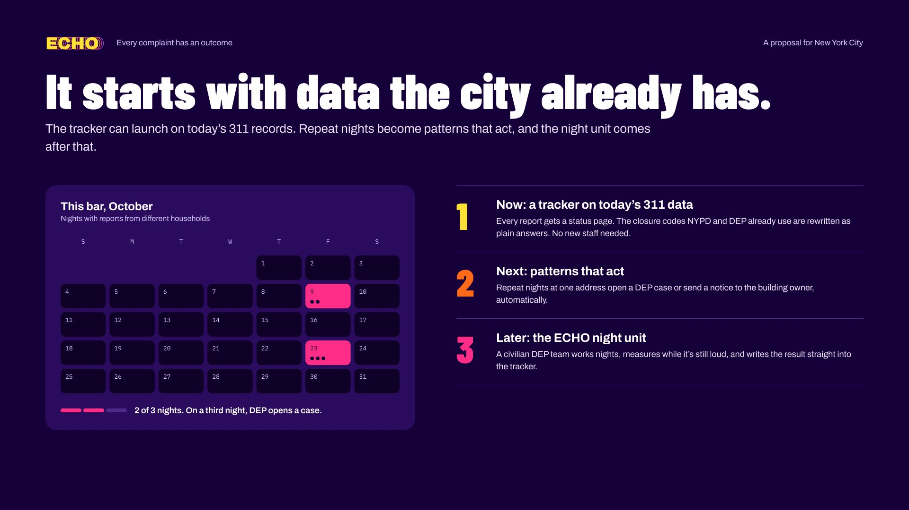
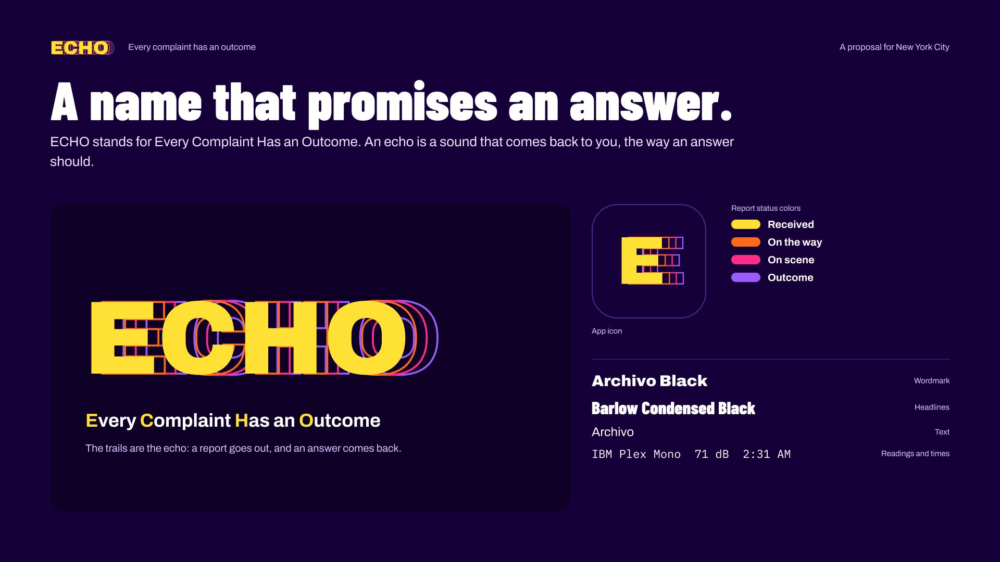
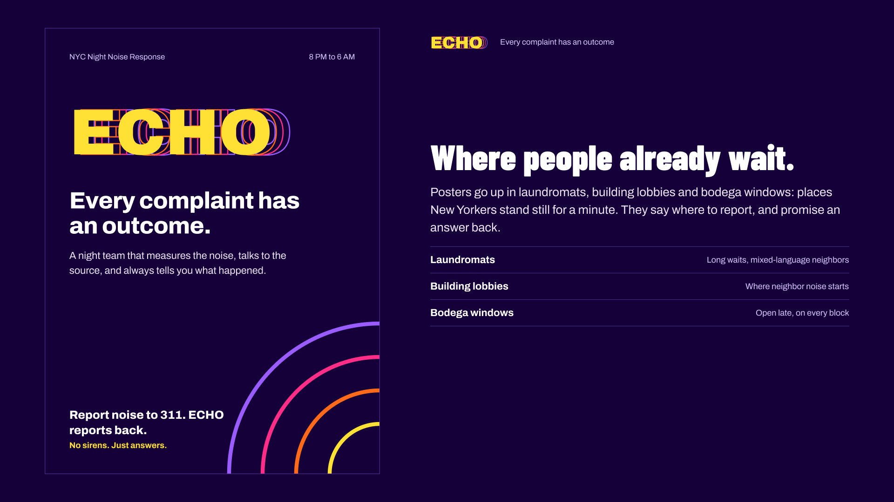

Competition entry, Civic by Design 2026
ECHO
A service that tells every New Yorker who reports noise what happened next, even when the answer is no.

Overview
New Yorkers file about 610,000 noise complaints a year, and most never learn what happened. In one NYU study, 78% of complaints routed to DEP ended with “No violation could be observed.”
The challenge was about noise. I focused on what happens after a report: people file one and never hear back. ECHO, short for Every Complaint Has an Outcome, gives every report a live tracker, like a food delivery app.
When three households report the same place within 30 minutes, a silent night unit goes out with a calibrated meter. Every tracker ends with one of five answers, and a third night of reports opens a DEP case automatically.
ECHO can start today on 311 data.
The proposal
-

610,000 go in. Most never come back.
Most reports end without a ticket, and the person who filed never hears why. The slide draws them as stars falling into a black hole.
-

Every report gets a tracker.
Like a food delivery app: you see when a unit leaves, how far away it is, and what it found. Four stages, four colors: received, on the way, on scene, outcome.
-

“Nothing happened” is an answer too.
Every ending gets its own message: what happened, why, and what’s next. Five answers cover every case: over the limit, under the limit, quiet on arrival, no unit tonight, sent elsewhere.
-

It starts with data the city already has.
Now, a tracker on today’s 311 data. Next, repeat nights become patterns that act. Later, the ECHO night unit.
-

A name that promises an answer.
An echo is a sound that comes back to you, the way an answer should. The trails behind the wordmark are the echo: a report goes out, and an answer comes back.
-

Where people already wait.
Posters go up in laundromats, building lobbies and bodega windows: places New Yorkers stand still for a minute. They say where to report, and promise an answer back.